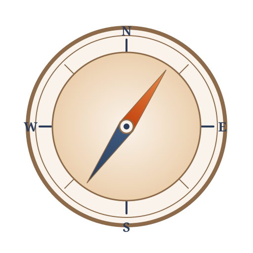

Advices to CS Students in 2026
Six pieces of advice for navigating a degree in the AI era, each with a pattern to adopt, an anti-pattern to avoid, and the inner statement that gives the anti-pattern away. Available in English and Hebrew.